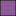

<!doctype html>
<html lang="en">
    <head>
        <meta charset="utf-8">
        <meta http-equiv="X-UA-Compatible" content="IE=edge">
        <meta name="viewport" content="initial-scale=1,user-scalable=no,maximum-scale=1,width=device-width">
        <meta name="mobile-web-app-capable" content="yes">
        <meta name="apple-mobile-web-app-capable" content="yes">
        <link rel="stylesheet" href="css/leaflet.css">
        <link rel="stylesheet" href="css/qgis2web.css"><link rel="stylesheet" href="css/fontawesome-all.min.css">
        <link rel="stylesheet" href="css/leaflet-search.css">
        <link rel="stylesheet" href="css/leaflet-control-geocoder.Geocoder.css">
        <link rel="stylesheet" href="css/leaflet-measure.css">
        <style>
        html, body, #map {
            width: 100%;
            height: 100%;
            padding: 0;
            margin: 0;
        }
        </style>
        <title></title>
    </head>
    <body>
        <div id="map">
        </div>
        <script src="js/qgis2web_expressions.js"></script>
        <script src="js/leaflet.js"></script>
        <script src="js/leaflet-svg-shape-markers.min.js"></script>
        <script src="js/leaflet.rotatedMarker.js"></script>
        <script src="js/leaflet.pattern.js"></script>
        <script src="js/leaflet-hash.js"></script>
        <script src="js/Autolinker.min.js"></script>
        <script src="js/rbush.min.js"></script>
        <script src="js/labelgun.min.js"></script>
        <script src="js/labels.js"></script>
        <script src="js/leaflet-control-geocoder.Geocoder.js"></script>
        <script src="js/leaflet-measure.js"></script>
        <script src="js/leaflet-search.js"></script>
        <script src="data/Jalan1200m_1.js"></script>
        <script src="data/Jalan800m_2.js"></script>
        <script src="data/Jalan400m_3.js"></script>
        <script src="data/Keterjangkauan1200m_4.js"></script>
        <script src="data/Keterjangkauan800m_5.js"></script>
        <script src="data/Keterjangkauan400m_6.js"></script>
        <script src="data/JALAN_7.js"></script>
        <script src="data/HOTEL_8.js"></script>
        <script src="data/STASIUN_9.js"></script>
        <script>
        var map = L.map('map', {
            zoomControl:true, maxZoom:28, minZoom:1
        })
        var hash = new L.Hash(map);
        map.attributionControl.setPrefix('<a href="https://github.com/tomchadwin/qgis2web" target="_blank">qgis2web</a> &middot; <a href="https://leafletjs.com" title="A JS library for interactive maps">Leaflet</a> &middot; <a href="https://qgis.org">QGIS</a>');
        var autolinker = new Autolinker({truncate: {length: 30, location: 'smart'}});
        var measureControl = new L.Control.Measure({
            position: 'topleft',
            primaryLengthUnit: 'meters',
            secondaryLengthUnit: 'kilometers',
            primaryAreaUnit: 'sqmeters',
            secondaryAreaUnit: 'hectares'
        });
        measureControl.addTo(map);
        document.getElementsByClassName('leaflet-control-measure-toggle')[0]
        .innerHTML = '';
        document.getElementsByClassName('leaflet-control-measure-toggle')[0]
        .className += ' fas fa-ruler';
        var bounds_group = new L.featureGroup([]);
        function setBounds() {
            if (bounds_group.getLayers().length) {
                map.fitBounds(bounds_group.getBounds());
            }
        }
        map.createPane('pane_GoogleStreets_0');
        map.getPane('pane_GoogleStreets_0').style.zIndex = 400;
        var layer_GoogleStreets_0 = L.tileLayer('https://mt0.google.com/vt/lyrs=m&x={x}&y={y}&z={z}', {
            pane: 'pane_GoogleStreets_0',
            opacity: 1.0,
            attribution: '',
            minZoom: 1,
            maxZoom: 28,
            minNativeZoom: 0,
            maxNativeZoom: 20
        });
        layer_GoogleStreets_0;
        map.addLayer(layer_GoogleStreets_0);
        function pop_Jalan1200m_1(feature, layer) {
        }

        function style_Jalan1200m_1_0() {
            return {
                pane: 'pane_Jalan1200m_1',
                opacity: 1,
                color: 'rgba(164,113,88,1.0)',
                dashArray: '',
                lineCap: 'square',
                lineJoin: 'bevel',
                weight: 1.0,
                fillOpacity: 0,
                interactive: true,
            }
        }
        map.createPane('pane_Jalan1200m_1');
        map.getPane('pane_Jalan1200m_1').style.zIndex = 401;
        map.getPane('pane_Jalan1200m_1').style['mix-blend-mode'] = 'normal';
        var layer_Jalan1200m_1 = new L.geoJson(json_Jalan1200m_1, {
            attribution: '',
            interactive: true,
            dataVar: 'json_Jalan1200m_1',
            layerName: 'layer_Jalan1200m_1',
            pane: 'pane_Jalan1200m_1',
            onEachFeature: pop_Jalan1200m_1,
            style: style_Jalan1200m_1_0,
        });
        bounds_group.addLayer(layer_Jalan1200m_1);
        map.addLayer(layer_Jalan1200m_1);
        function pop_Jalan800m_2(feature, layer) {
        }

        function style_Jalan800m_2_0() {
            return {
                pane: 'pane_Jalan800m_2',
                opacity: 1,
                color: 'rgba(133,182,111,1.0)',
                dashArray: '',
                lineCap: 'square',
                lineJoin: 'bevel',
                weight: 1.0,
                fillOpacity: 0,
                interactive: true,
            }
        }
        map.createPane('pane_Jalan800m_2');
        map.getPane('pane_Jalan800m_2').style.zIndex = 402;
        map.getPane('pane_Jalan800m_2').style['mix-blend-mode'] = 'normal';
        var layer_Jalan800m_2 = new L.geoJson(json_Jalan800m_2, {
            attribution: '',
            interactive: true,
            dataVar: 'json_Jalan800m_2',
            layerName: 'layer_Jalan800m_2',
            pane: 'pane_Jalan800m_2',
            onEachFeature: pop_Jalan800m_2,
            style: style_Jalan800m_2_0,
        });
        bounds_group.addLayer(layer_Jalan800m_2);
        map.addLayer(layer_Jalan800m_2);
        function pop_Jalan400m_3(feature, layer) {
        }

        function style_Jalan400m_3_0() {
            return {
                pane: 'pane_Jalan400m_3',
                opacity: 1,
                color: 'rgba(141,90,153,1.0)',
                dashArray: '',
                lineCap: 'square',
                lineJoin: 'bevel',
                weight: 1.0,
                fillOpacity: 0,
                interactive: true,
            }
        }
        map.createPane('pane_Jalan400m_3');
        map.getPane('pane_Jalan400m_3').style.zIndex = 403;
        map.getPane('pane_Jalan400m_3').style['mix-blend-mode'] = 'normal';
        var layer_Jalan400m_3 = new L.geoJson(json_Jalan400m_3, {
            attribution: '',
            interactive: true,
            dataVar: 'json_Jalan400m_3',
            layerName: 'layer_Jalan400m_3',
            pane: 'pane_Jalan400m_3',
            onEachFeature: pop_Jalan400m_3,
            style: style_Jalan400m_3_0,
        });
        bounds_group.addLayer(layer_Jalan400m_3);
        map.addLayer(layer_Jalan400m_3);
        function pop_Keterjangkauan1200m_4(feature, layer) {
            var popupContent = '<table>\
                    <tr>\
                        <td colspan="2">' + (feature.properties['STASIUN'] !== null ? autolinker.link(feature.properties['STASIUN'].toLocaleString()) : '') + '</td>\
                    </tr>\
                </table>';
            layer.bindPopup(popupContent, {maxHeight: 400});
        }

        function style_Keterjangkauan1200m_4_0() {
            return {
                pane: 'pane_Keterjangkauan1200m_4',
                opacity: 1,
                color: 'rgba(119,61,128,1.0)',
                dashArray: '',
                lineCap: 'butt',
                lineJoin: 'miter',
                weight: 1.0, 
                fill: true,
                fillOpacity: 1,
                fillColor: 'rgba(74,38,79,1.0)',
                interactive: true,
            }
        }
        map.createPane('pane_Keterjangkauan1200m_4');
        map.getPane('pane_Keterjangkauan1200m_4').style.zIndex = 404;
        map.getPane('pane_Keterjangkauan1200m_4').style['mix-blend-mode'] = 'normal';
        var layer_Keterjangkauan1200m_4 = new L.geoJson(json_Keterjangkauan1200m_4, {
            attribution: '',
            interactive: true,
            dataVar: 'json_Keterjangkauan1200m_4',
            layerName: 'layer_Keterjangkauan1200m_4',
            pane: 'pane_Keterjangkauan1200m_4',
            onEachFeature: pop_Keterjangkauan1200m_4,
            style: style_Keterjangkauan1200m_4_0,
        });
        bounds_group.addLayer(layer_Keterjangkauan1200m_4);
        map.addLayer(layer_Keterjangkauan1200m_4);
        function pop_Keterjangkauan800m_5(feature, layer) {
            var popupContent = '<table>\
                    <tr>\
                        <td colspan="2">' + (feature.properties['STASIUN'] !== null ? autolinker.link(feature.properties['STASIUN'].toLocaleString()) : '') + '</td>\
                    </tr>\
                </table>';
            layer.bindPopup(popupContent, {maxHeight: 400});
        }

        function style_Keterjangkauan800m_5_0() {
            return {
                pane: 'pane_Keterjangkauan800m_5',
                opacity: 1,
                color: 'rgba(35,35,35,1.0)',
                dashArray: '',
                lineCap: 'butt',
                lineJoin: 'miter',
                weight: 1.0, 
                fill: true,
                fillOpacity: 1,
                fillColor: 'rgba(141,90,153,1.0)',
                interactive: true,
            }
        }
        map.createPane('pane_Keterjangkauan800m_5');
        map.getPane('pane_Keterjangkauan800m_5').style.zIndex = 405;
        map.getPane('pane_Keterjangkauan800m_5').style['mix-blend-mode'] = 'normal';
        var layer_Keterjangkauan800m_5 = new L.geoJson(json_Keterjangkauan800m_5, {
            attribution: '',
            interactive: true,
            dataVar: 'json_Keterjangkauan800m_5',
            layerName: 'layer_Keterjangkauan800m_5',
            pane: 'pane_Keterjangkauan800m_5',
            onEachFeature: pop_Keterjangkauan800m_5,
            style: style_Keterjangkauan800m_5_0,
        });
        bounds_group.addLayer(layer_Keterjangkauan800m_5);
        map.addLayer(layer_Keterjangkauan800m_5);
        function pop_Keterjangkauan400m_6(feature, layer) {
            var popupContent = '<table>\
                    <tr>\
                        <td colspan="2">' + (feature.properties['STASIUN'] !== null ? autolinker.link(feature.properties['STASIUN'].toLocaleString()) : '') + '</td>\
                    </tr>\
                    <tr>\
                        <td colspan="2"><strong>NAMA</strong><br />' + (feature.properties['NAMA'] !== null ? autolinker.link(feature.properties['NAMA'].toLocaleString()) : '') + '</td>\
                    </tr>\
                </table>';
            layer.bindPopup(popupContent, {maxHeight: 400});
        }

        function style_Keterjangkauan400m_6_0() {
            return {
                pane: 'pane_Keterjangkauan400m_6',
                opacity: 1,
                color: 'rgba(153,80,119,1.0)',
                dashArray: '',
                lineCap: 'butt',
                lineJoin: 'miter',
                weight: 1.0, 
                fill: true,
                fillOpacity: 1,
                fillColor: 'rgba(247,129,191,1.0)',
                interactive: true,
            }
        }
        map.createPane('pane_Keterjangkauan400m_6');
        map.getPane('pane_Keterjangkauan400m_6').style.zIndex = 406;
        map.getPane('pane_Keterjangkauan400m_6').style['mix-blend-mode'] = 'normal';
        var layer_Keterjangkauan400m_6 = new L.geoJson(json_Keterjangkauan400m_6, {
            attribution: '',
            interactive: true,
            dataVar: 'json_Keterjangkauan400m_6',
            layerName: 'layer_Keterjangkauan400m_6',
            pane: 'pane_Keterjangkauan400m_6',
            onEachFeature: pop_Keterjangkauan400m_6,
            style: style_Keterjangkauan400m_6_0,
        });
        bounds_group.addLayer(layer_Keterjangkauan400m_6);
        map.addLayer(layer_Keterjangkauan400m_6);
        function pop_JALAN_7(feature, layer) {
        }

        function style_JALAN_7_0() {
            return {
                pane: 'pane_JALAN_7',
                opacity: 1,
                color: 'rgba(255,250,238,1.0)',
                dashArray: '',
                lineCap: 'square',
                lineJoin: 'bevel',
                weight: 1.0,
                fillOpacity: 0,
                interactive: true,
            }
        }
        map.createPane('pane_JALAN_7');
        map.getPane('pane_JALAN_7').style.zIndex = 407;
        map.getPane('pane_JALAN_7').style['mix-blend-mode'] = 'normal';
        var layer_JALAN_7 = new L.geoJson(json_JALAN_7, {
            attribution: '',
            interactive: true,
            dataVar: 'json_JALAN_7',
            layerName: 'layer_JALAN_7',
            pane: 'pane_JALAN_7',
            onEachFeature: pop_JALAN_7,
            style: style_JALAN_7_0,
        });
        bounds_group.addLayer(layer_JALAN_7);
        map.addLayer(layer_JALAN_7);
        function pop_HOTEL_8(feature, layer) {
            var popupContent = '<table>\
                    <tr>\
                        <td colspan="2"><strong>Hotel</strong><br />' + (feature.properties['Hotel'] !== null ? autolinker.link(feature.properties['Hotel'].toLocaleString()) : '') + '</td>\
                    </tr>\
                    <tr>\
                        <th scope="row">Alamat</th>\
                        <td>' + (feature.properties['Alamat'] !== null ? autolinker.link(feature.properties['Alamat'].toLocaleString()) : '') + '</td>\
                    </tr>\
                    <tr>\
                        <th scope="row">Jangkauan</th>\
                        <td>' + (feature.properties['Jangkauan'] !== null ? autolinker.link(feature.properties['Jangkauan'].toLocaleString()) : '') + '</td>\
                    </tr>\
                </table>';
            layer.bindPopup(popupContent, {maxHeight: 400});
        }

        function style_HOTEL_8_0() {
            return {
                pane: 'pane_HOTEL_8',
                radius: 6.0,
                opacity: 1,
                color: 'rgba(35,35,35,1.0)',
                dashArray: '',
                lineCap: 'butt',
                lineJoin: 'miter',
                weight: 1,
                fill: true,
                fillOpacity: 1,
                fillColor: 'rgba(255,239,197,1.0)',
                interactive: true,
            }
        }
        map.createPane('pane_HOTEL_8');
        map.getPane('pane_HOTEL_8').style.zIndex = 408;
        map.getPane('pane_HOTEL_8').style['mix-blend-mode'] = 'normal';
        var layer_HOTEL_8 = new L.geoJson(json_HOTEL_8, {
            attribution: '',
            interactive: true,
            dataVar: 'json_HOTEL_8',
            layerName: 'layer_HOTEL_8',
            pane: 'pane_HOTEL_8',
            onEachFeature: pop_HOTEL_8,
            pointToLayer: function (feature, latlng) {
                var context = {
                    feature: feature,
                    variables: {}
                };
                return L.circleMarker(latlng, style_HOTEL_8_0(feature));
            },
        });
        bounds_group.addLayer(layer_HOTEL_8);
        map.addLayer(layer_HOTEL_8);
        function pop_STASIUN_9(feature, layer) {
            var popupContent = '<table>\
                    <tr>\
                        <td colspan="2"><strong>NAMA</strong><br />' + (feature.properties['NAMA'] !== null ? autolinker.link(feature.properties['NAMA'].toLocaleString()) : '') + '</td>\
                    </tr>\
                    <tr>\
                        <th scope="row">Foto</th>\
                        <td>' + (feature.properties['Foto'] !== null ? '' : '') + '</td>\
                    </tr>\
                    <tr>\
                        <th scope="row">Alamat</th>\
                        <td>' + (feature.properties['Alamat'] !== null ? autolinker.link(feature.properties['Alamat'].toLocaleString()) : '') + '</td>\
                    </tr>\
                    <tr>\
                        <td colspan="2"><strong>Keterjangkauan 400 m</strong><br />' + (feature.properties['Keterjangkauan 400 m'] !== null ? autolinker.link(feature.properties['Keterjangkauan 400 m'].toLocaleString()) : '') + '</td>\
                    </tr>\
                    <tr>\
                        <td colspan="2"><strong>Keterjangkauan 800 m</strong><br />' + (feature.properties['Keterjangkauan 800 m'] !== null ? autolinker.link(feature.properties['Keterjangkauan 800 m'].toLocaleString()) : '') + '</td>\
                    </tr>\
                    <tr>\
                        <td colspan="2"><strong>Keterjangkauan 1200 m</strong><br />' + (feature.properties['Keterjangkauan 1200 m'] !== null ? autolinker.link(feature.properties['Keterjangkauan 1200 m'].toLocaleString()) : '') + '</td>\
                    </tr>\
                </table>';
            layer.bindPopup(popupContent, {maxHeight: 400});
        }

        function style_STASIUN_9_0() {
            return {
                pane: 'pane_STASIUN_9',
                shape: 'diamond',
                radius: 8.8,
                opacity: 1,
                color: 'rgba(128,17,25,1.0)',
                dashArray: '',
                lineCap: 'butt',
                lineJoin: 'miter',
                weight: 2.0,
                fill: true,
                fillOpacity: 1,
                fillColor: 'rgba(219,30,42,1.0)',
                interactive: true,
            }
        }
        map.createPane('pane_STASIUN_9');
        map.getPane('pane_STASIUN_9').style.zIndex = 409;
        map.getPane('pane_STASIUN_9').style['mix-blend-mode'] = 'normal';
        var layer_STASIUN_9 = new L.geoJson(json_STASIUN_9, {
            attribution: '',
            interactive: true,
            dataVar: 'json_STASIUN_9',
            layerName: 'layer_STASIUN_9',
            pane: 'pane_STASIUN_9',
            onEachFeature: pop_STASIUN_9,
            pointToLayer: function (feature, latlng) {
                var context = {
                    feature: feature,
                    variables: {}
                };
                return L.shapeMarker(latlng, style_STASIUN_9_0(feature));
            },
        });
        bounds_group.addLayer(layer_STASIUN_9);
        map.addLayer(layer_STASIUN_9);
        var osmGeocoder = new L.Control.Geocoder({
            collapsed: true,
            position: 'topleft',
            text: 'Search',
            title: 'Testing'
        }).addTo(map);
        document.getElementsByClassName('leaflet-control-geocoder-icon')[0]
        .className += ' fa fa-search';
        document.getElementsByClassName('leaflet-control-geocoder-icon')[0]
        .title += 'Search for a place';
        var baseMaps = {};
        L.control.layers(baseMaps,{' STASIUN': layer_STASIUN_9,' HOTEL': layer_HOTEL_8,' JALAN': layer_JALAN_7,' Keterjangkauan 400 m': layer_Keterjangkauan400m_6,' Keterjangkauan 800 m': layer_Keterjangkauan800m_5,' Keterjangkauan 1200 m': layer_Keterjangkauan1200m_4,' Jalan 400 m': layer_Jalan400m_3,' Jalan 800 m': layer_Jalan800m_2,' Jalan 1200 m': layer_Jalan1200m_1,"Google Streets": layer_GoogleStreets_0,},{collapsed:false}).addTo(map);
        setBounds();
        map.addControl(new L.Control.Search({
            layer: layer_HOTEL_8,
            initial: false,
            hideMarkerOnCollapse: true,
            propertyName: 'Hotel'}));
        document.getElementsByClassName('search-button')[0].className +=
         ' fa fa-binoculars';
        </script>
    </body>
</html>
